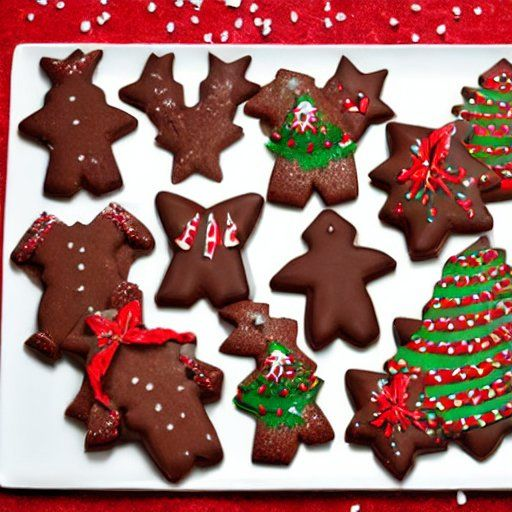

Biscuits de fantaisie au chocolat
Préparation: 40 minutes
Cuisson: 11 minutes
Total: 51 minutes
Ingrédients
-
1 t de beurre ramolli

-
125 g de fromage à la crème
-
1 t de sucre
-
2 gros oeuf
-
1 1/2 c. à thé d'extrait de vanille
-
1/4 c. à thé de sel
-
2.5 t de farine tout usage
-
1/2 t de cacao
Instructions
Dans un grand bol, battre en crème le beurre, le fromage à la crème et le sucre.
- 1 t de beurre ramolli
- 125 g de fromage à la crème
- 1 t de sucre
Incorporer les oeufs un à la fois, puis la vanille et le sel.
- 2 gros oeuf
- 1 1/2 c. à thé d'extrait de vanille
- 1/4 c. à thé de sel
Ajouter la farine et la cacao et remuer.
- 2.5 t de farine tout usage
- 1/2 t de cacao
Remplir la presse à biscuits et presser sur une plaque non graissée. Cuire au four à 350°F pendant 10 à 12 minutes. Les biscuits devraient être fermes et légèrement dorés sur les bords.